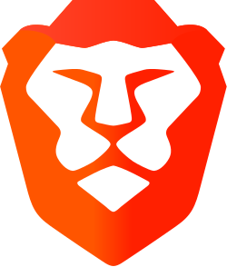
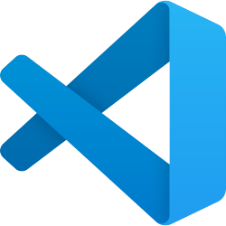

Brave
The browser I use every day. It's built on Chromium, the open source base behind Chrome, and it blocks ads and trackers by default. Its own code is public on GitHub too.
You probably use open source every day without knowing it. Here are a few I use.

The browser I use every day. It's built on Chromium, the open source base behind Chrome, and it blocks ads and trackers by default. Its own code is public on GitHub too.
The media player that opens almost any video file you throw at it. It's made by volunteers and has never charged a cent.
Lets you run AI chat models on your own laptop. It's free, there's no account, and nothing you type gets sent to a company's servers.

The editor I write my code in. Microsoft publishes the code behind it on GitHub, and thousands of people have helped improve it.